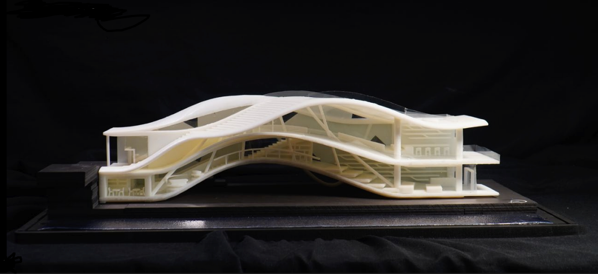
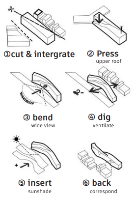
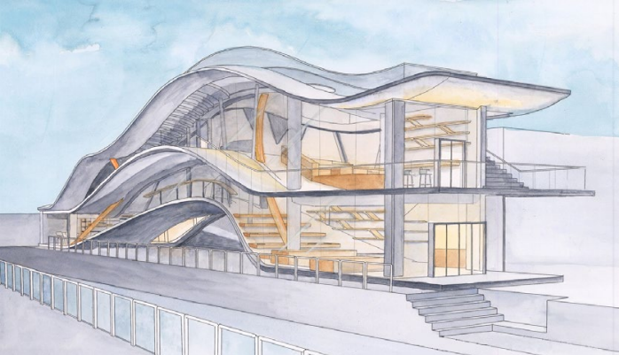
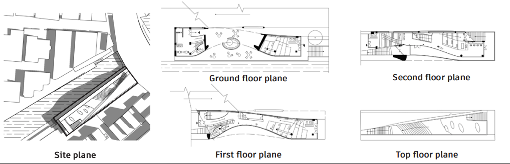

设计简介：广州老城区的荔枝湾涌和恩宁路都有悠长的历史和丰富的故事，项目位于他们的交界处。设计希望打造一个游径上的地标性的建筑：通过流线造型模拟河流冲击路堤的泛波。建筑巧妙利用恩宁路桥和地块的高差，游客可以沿着一侧的缓坡走上屋顶花园观光。内部延续了和外部造型一致的坡度，打造丰富的内部空间。


设计生成过程

手绘渲染图

技术性图纸
Design Concept: Located at the junction of Lizhiwan Creek and Enning Road in Guangzhou's historic district—both steeped in history and rich narratives—the project aims to create a landmark structure along the waterfront promenade. Its fluid form mimics the rippling waves generated when river currents impact embankments. The building cleverly utilizes the elevation difference between Enning Road Bridge and the site. Visitors can ascend to the rooftop garden via a gentle slope on one side. Internally, the same gradient as the exterior form creates a richly varied spatial experience.
Design Generation Process
Hand-drawn rendering
Technical drawings